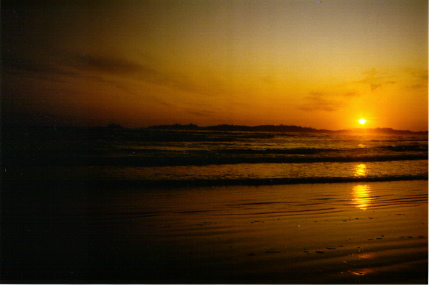

Previous
Day
Previous
Day Next Day
Next Day
Well, that was a longer day than I bargained for, or at least it felt like it. I got up at twenty to eight and had breakfast and then relaxed until eleven or so. Then I hopped on my bike and took off.
My knees felt lousy all day today. Had to stand up for some hills and used lower gears than normal all day. I also developed a creak in the bottom bracket. However, I made it to Long Beach and at the moment I'm sitting on a driftwood log watching the sunset.

That's one good thing about today--I saw the sun a lot. Bad thing: the boat isn't going back to Port Alberni.
Previous
Day
Next Day
 Dave's Page
Dave's Page
 Home
Home